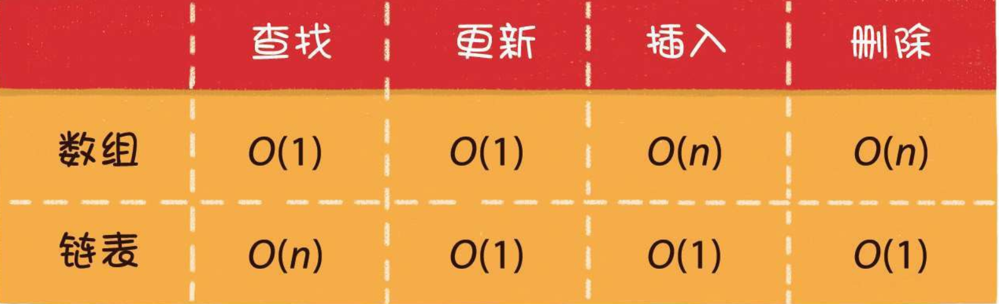

# 漫画算法 总结
# 1.算法概述
# 1.1 算法和数据结构
什么是算法
本书所涉及的算法， 是计算机科学领域的算法， 它的本质是一系列程序指令， 用于解决特定的运算和逻辑问题。
衡量算法好坏的重要标准有两个。
- 时间复杂度
- 空间复杂度
什么是数据结构
数据结构， 对应的英文单词是data structure， 是数据的组织、 管理和存储格式，其使用目的是为了高效地访问和修改数据。
数据结构都有哪些组成方式呢？
- 线性结构
- 树
- 图
- 其他数据结构 除上述所列的几种基本数据结构以外， 还有一些其他的千奇百怪的数据结构。它们由基本数据结构变形而来， 用于解决某些特定问题， 如跳表、 哈希链表、 位图等。
# 1.2 时间复杂度
如何推导出时间复杂度呢？ 有如下几个原则。
- 如果运行时间是常数量级， 则用常数1表示
- 只保留时间函数中的最高阶项
- 如果最高阶项存在， 则省去最高阶项前面的系数
# 1.3 空间复杂度
和时间复杂度类似， 空间复杂度是对一个算法在运行过程中临时占用存储空间大小的量度， 它同样使用了大O表示法。
程序占用空间大小的计算公式记作S(n)=O(f(n))， 其中n为问题的规模， f(n)为算法所占存储空间的函数。
常见的空间复杂度有下面几种情形。
- 常量空间 当算法的存储空间大小固定， 和输入规模没有直接的关系时， 空间复杂度记作O(1)。
- 线性空间 当算法分配的空间是一个线性的集合（ 如数组） ， 并且集合大小和输入规模n成正比时， 空间复杂度记作O(n)。
- 二维空间 当算法分配的空间是一个二维数组集合， 并且集合的长度和宽度都与输入规模n成正比时， 空间复杂度记作O(n2)。
- 递归空间 递归是一个比较特殊的场景。 虽然递归代码中并没有显式地声明变量或集合，但是计算机在执行程序时， 会专门分配一块内存， 用来存储“方法调用栈” 。
“方法调用栈” 包括进栈和出栈两个行为。
当进入一个新方法时， 执行入栈操作， 把调用的方法和参数信息压入栈中。
当方法返回时， 执行出栈操作， 把调用的方法和参数信息从栈中弹出。
纯粹的递归操作的空间复杂度也是线性的， 如果递归的深度是n， 那么空间复杂度就是O(n)。
# 1.4 小结
- 什么是算法
在计算机领域里， 算法是一系列程序指令， 用于处理特定的运算和逻辑问题。衡量算法优劣的主要标准是时间复杂度和空间复杂度。
- 什么是数据结构
数据结构是数据的组织、 管理和存储格式， 其使用目的是为了高效地访问和修改数据。
数据结构包含数组、 链表这样的线性数据结构， 也包含树、 图这样的复杂数据结构。
- 什么是时间复杂度
时间复杂度是对一个算法运行时间长短的量度， 用大O表示， 记作T(n)=O(f(n))。
常见的时间复杂度按照从低到高的顺序， 包括O(1)、 O(logn)、 O(n)、O(nlogn)、 O(n2)等。
- 什么是空间复杂度
空间复杂度是对一个算法在运行过程中临时占用存储空间大小的量度， 用大O表示， 记作S(n)=O(f(n))。
常见的空间复杂度按照从低到高的顺序， 包括O(1)、 O(n)、 O(n2)等。 其中递归算法的空间复杂度和递归深度成正比。
# 2.数据结构基础
# 2.1 什么是数组
数组对应的英文是array， 是有限个相同类型的变量所组成的有序集合， 数组中的每一个变量被称为元素。 数组是最为简单、 最为常用的数据结构。
数组的另一个特点， 是在内存中顺序存储， 因此可以很好地实现逻辑上的顺序表。
2.1.2 数组的基本操作
- 读取元素
对于数组来说， 读取元素是最简单的操作。 由于数组在内存中顺序存储， 所以 只要给出一个数组下标， 就可以读取到对应的数组元素。
- 更新元素
要把数组中某一个元素的值替换为一个新值， 也是非常简单的操作。 直接利用
数组下标， 就可以把新值赋给该元素。数组读取元素和更新元素的时间复杂度都是O(1)。
- 插入元素
在介绍插入数组元素的操作之前， 我们需要补充一个概念， 那就是数组的实际 元素数量有可能小于数组的长度.
插入数组元素的操作存在3种情况。
- 尾部插入
尾部插入， 是最简单的情况， 直接把插入的元素放在数组尾部的空闲位置即可， 等同于更新元素的操作。
- 中间插入
中间插入， 稍微复杂一些。 由于数组的每一个元素都有其固定下标， 所以不得不首先把插入位置及后面的元素向后移动， 腾出地方， 再把要插入的元素放到对应的数组位置上。
- 超范围插入
此时可以创建一个新数组， 长度是旧数组的2倍， 再把旧数组中的元素统统复制过去， 这样就实现了数组的扩容。
插入操作， 数组扩容的时间复杂度是O(n)， 插入并移动元素的时间复杂度也是O(n)， 综合起来插入操作的时间复杂度是O(n)。
- 删除元素
数组的删除操作和插入操作的过程相反， 如果删除的元素位于数组中间， 其后
的元素都需要向前挪动1位。至于删除操作， 只涉及元素的移动， 时间复杂度也是O(n)。
2.1.3 数组的优势和劣势
优势：
数组拥有非常高效的随机访问能力， 只要给出下标， 就可以用常量时间找到对应元素。 有一种高效查找元素的算法叫作二分查找，就是利用了数组的这个优势。
劣势：
数组的劣势， 体现在插入和删除元素方面。 由于数组元素连续紧密地存储在内存中， 插入、 删除元素都会导致大量元素被迫移动， 影响效率。
总的来说， 数组所适合的是读操作多、 写操作少的场景。
# 2.2 什么是链表
链表（ linked list） 是一种在物理上非连续、 非顺序的数据结构， 由若干节点（ node） 所组成。
- 单向链表的每一个节点又包含两部分， 一部分是存放数据的变量data， 另一部分是指向下一个节点的指针next。
与数组按照下标来随机寻找元素不同， 对于链表的其中一个节点A， 我们只能根据节点A的next指针来找到该节点的下一个节点B， 再根据节点B的next指针找到下一个节点C……
- 双向链表比单向链表稍微复杂一些， 它的每一个节点除了拥有data和next指针， 还拥有指向前置节点的prev指针。
如果说数组在内存中的存储方式是顺序存储， 那么链表在内存中的存储方式则是随机存储。
什么叫随机存储呢？
上一节我们讲解了数组的内存分配方式， 数组在内存中占用了连续完整的存储空间。 而链表则采用了见缝插针的方式， 链表的每一个节点分布在内存的不同位置， 依靠next指针关联起来。 这样可以灵活有效地利用零散的碎片空间。
2.2.2 链表的基本操作
- 查找节点
在查找元素时， 链表不像数组那样可以通过下标快速进行定位， 只能从头节点
开始向后一个一个节点逐一查找。
链表中的数据只能按顺序进行访问， 最坏的时间复杂度是O(n)。
- 查找节点
在查找元素时， 链表不像数组那样可以通过下标快速进行定位， 只能从头节点
开始向后一个一个节点逐一查找。
- 更新节点 如果不考虑查找节点的过程， 链表的更新过程会像数组那样简单， 直接把旧数 据替换成新数据即可.
- 插入节点 与数组类似， 链表插入节点时， 同样分为3种情况。
- 尾部插入
尾部插入， 是最简单的情况， 把最后一个节点的next指针指向新插入的节点即可。
- 头部插入
头部插入， 可以分成两个步骤。
第1步， 把新节点的next指针指向原先的头节点。
第2步， 把新节点变为链表的头节点。
- 中间插入
中间插入， 同样分为两个步骤。
第1步， 新节点的next指针， 指向插入位置的节点。
第2步， 插入位置前置节点的next指针， 指向新节点。
只要内存空间允许， 能够插入链表的元素是无穷无尽的， 不需要像数组那样考虑扩容的问题。
- 删除元素 链表的删除操作同样分为3种情况。
- 尾部删除
尾部删除， 是最简单的情况， 把倒数第2个节点的next指针指向空即可。
- 头部删除
头部删除， 也很简单， 把链表的头节点设为原先头节点的next指针即可。
- 中间删除
中间删除， 同样很简单， 把要删除节点的前置节点的next指针， 指向要删除元素的下一个节点即可。
如果不考虑插入、 删除操作之前查找元素的过程， 只考虑纯粹的插入和删除操作， 时间复杂度都是O(1)。
2.2.3 数组VS链表 
从表格可以看出， 数组的优势在于能够快速定位元素，对于读操作多、 写操作少的场景来说， 用数组更合适一些。相反地， 链表的优势在于能够灵活地进行插入和删除操作， 如果需要在尾部频繁插入、 删除元素， 用链表更合适一些。
# 2.3 栈和队列
2.3.1 物理结构和逻辑结构
如果把物质层面的人体比作数据存储的物理结构， 那么精神层面的人格则是数据存储的逻辑结构。 逻辑结构是抽象的概念， 它依赖于物理结构而存在。
下面我们来讲解两个常用数据结构： 栈和队列。 这两者都属于逻辑结构， 它们的物理实现既可以利用数组， 也可以利用链表来完成。
2.3.2 什么是栈
栈（ stack） 是一种线性数据结构， 它就像一个容器， 栈中的元素只能先入后出（ First In Last Out， 简称FILO） 。 最早进入的元素存放的位置叫作栈底（ bottom） ， 最后进入的元素存放的位置叫作栈顶（ top） 。
栈这种数据结构既可以用数组来实现， 也可以用链表来实现。
2.3.3 栈的基本操作
- 入栈 入栈操作（ push） 就是把新元素放入栈中， 只允许从栈顶一侧放入元素， 新元素的位置将会成为新的栈顶。
- 出栈 出栈操作（ pop） 就是把元素从栈中弹出， 只有栈顶元素才允许出栈， 出栈元素的前一个元素将会成为新的栈顶。
无论是以数组还是以链表实现， 入栈、 出栈的时间复杂度都是O(1)
2.3.4 什么是队列
队列（ queue） 是一种线性数据结构， 它的特征和行驶车辆的单行隧道很相似。不同于栈的先入后出， 队列中的元素只能先入先出（ First In First Out， 简称FIFO） 。 队列的出口端叫作队头（ front） ， 队列的入口端叫作队尾（ rear） 。
与栈类似， 队列这种数据结构既可以用数组来实现， 也可以用链表来实现。
2.3.5 队列的基本操作
对于链表实现方式， 队列的入队、 出队操作和栈是大同小异的。 但对于数组实现方式来说， 队列的入队和出队操作有了一些有趣的变化。
- 入队 入队（ enqueue） 就是把新元素放入队列中， 只允许在队尾的位置放入元素， 新元素的下一个位置将会成为新的队尾。
- 出队 出队操作（ dequeue） 就是把元素移出队列， 只允许在队头一侧移出元素， 出 队元素的后一个元素将会成为新的队头。
用数组实现的队列可以采用循环队列的方式来维持队列容量的恒定。入队和出队的时间复杂度， 也同样是O(1)
2.3.6 栈和队列的应用
- 栈的应用
栈的输出顺序和输入顺序相反， 所以栈通常用于对“历史” 的回溯， 也就是逆流而上追溯“历史” 。
例如实现递归的逻辑， 就可以用栈来代替， 因为栈可以回溯方法的调用链。
- 队列的应用
队列的输出顺序和输入顺序相同， 所以队列通常用于对“历史” 的回放， 也就 是按照“历史” 顺序， 把“历史” 重演一遍。
例如在多线程中， 争夺公平锁的等待队列， 就是按照访问顺序来决定线程在队 列中的次序的。
再如网络爬虫实现网站抓取时， 也是把待抓取的网站URL存入队列中， 再按照存入队列的顺序来依次抓取和解析的。
- 双端队列
双端队列这种数据结构， 可以说综合了栈和队列的优点， 对双端队列来说， 从队头一端可以入队或出队， 从队尾一端也可以入队或出队。
- 优先队列
还有一种队列， 它遵循的不是先入先出， 而是谁的优先级最高， 谁先出队。
优先队列已经不属于线性数据结构的范畴了， 它是基于二叉堆来实现的。
# 2.4 神奇的散列表
2.4.1 为什么需要散列表
散列表也叫作哈希表（ hash table） ， 这种数据结构提供了键（ Key） 和值（ Value） 的映射关系。 只要给出一个Key， 就可以高效查找到它所匹配的Value， 时间复杂度接近于O(1).
2.4.2 哈希函数
散列表在本质上也是一个数组,而散列表的Key则是以字符串类型为主的。所以我们需要一个“ 中转站” ， 通过某种方式， 把Key和数组下标进行转换。 这个中转站就叫作哈希函数。
这个所谓的哈希函数是怎么实现的呢？
在不同的语言中， 哈希函数的实现方式是不一样的。
在Java及大多数面向对象的语言中， 每一个对象都有属于自己的hashcode， 这个hashcode是区分不同对象的重要标识。 无论对象自身的类型是什么， 它们的hashcode都是一个整型变量。
既然都是整型变量， 想要转化成数组的下标也就不难实现了。 最简单的转化方式是什么呢？ 是按照数组长度进行取模运算。
index = HashCode (Key) % Array.length
2.4.3 散列表的读写操作
有了哈希函数， 就可以在散列表中进行读写操作了。
- 写操作（put）写操作就是在散列表中插入新的键值对（ 在JDK中叫作Entry） 。
如调用hashMap.put("002931", "王五")， 意思是插入一组Key为002931、Value为王五的键值对。
具体该怎么做呢？
第1步， 通过哈希函数， 把Key转化成数组下标5。
第2步， 如果数组下标5对应的位置没有元素， 就把这个Entry填充到数组下标5的位置。
但是， 由于数组的长度是有限的， 当插入的Entry越来越多时， 不同的Key通过哈希函数获得的下标有可能是相同的。 这种情况， 就叫作哈希冲突。
解决哈希冲突的方法主要有两种， 一种是开放寻址法， 一种是链表法。
开放寻址法的原理很简单， 当一个Key通过哈希函数获得对应的数组下标已被占用时， 我们可以“另谋高就” ， 寻找下一个空档位置。
链表法，这种方法被应用在了Java的集合类HashMap当中。HashMap数组的每一个元素不仅是一个Entry对象， 还是一个链表的头节点。 每一个Entry对象通过next指针指向它的下一个Entry节点。 当新来的Entry映射到与之冲突的数组位置时， 只需要插入到对应的链表中即可。
- 读操作（get）
讲完了写操作， 我们再来讲一讲读操作。 读操作就是通过给定的Key， 在散列表 中查找对应的Value。
例如调用 hashMap.get("002936")， 意思是查找Key为002936的Entry在散列 表中所对应的值。
具体该怎么做呢？ 下面以链表法为例来讲一下。
第1步， 通过哈希函数， 把Key转化成数组下标2。
第2步， 找到数组下标2所对应的元素， 如果这个元素的Key是002936， 那么就找到了； 如果这个Key不是002936也没关系， 由于数组的每个元素都与一个链表对应， 我们可以顺着链表慢慢往下找， 看看能否找到与Key相匹配的节点。
- 扩容（resize）
在讲解数组时， 曾经介绍过数组的扩容。 既然散列表是基于数组实现的， 那么 散列表也要涉及扩容的问题。
首先， 什么时候需要进行扩容呢？
当经过多次元素插入， 散列表达到一定饱和度时， Key映射位置发生冲突的概率 会逐渐提高。 这样一来， 大量元素拥挤在相同的数组下标位置， 形成很长的链表， 对后续插入操作和查询操作的性能都有很大影响。
扩容不是简单地把散列表的长度扩大， 而是经历了下面两个步骤。
1． 扩容， 创建一个新的Entry空数组， 长度是原数组的2倍。
2． 重新Hash， 遍历原Entry数组， 把所有的Entry重新Hash到新数组中。 为什么要重新Hash呢？ 因为长度扩大以后， Hash的规则也随之改变。
经过扩容， 原本拥挤的散列表重新变得稀疏， 原有的Entry也重新得到了尽可能均匀的分配。
# 2.5 小结
什么是数组 数组是由有限个相同类型的变量所组成的有序集合， 它的物理存储方式是顺序存储， 访问方式是随机访问。 利用下标查找数组元素的时间复杂度是O(1)， 中间插入、 删除数组元素的时间复杂度是O(n)。
什么是链表 链表是一种链式数据结构， 由若干节点组成， 每个节点包含指向下一节点的指针。 链表的物理存储方式是随机存储， 访问方式是顺序访问。 查找链表节点的时间复杂度是O(n)， 中间插入、 删除节点的时间复杂度是O(1)。
什么是栈 栈是一种线性逻辑结构， 可以用数组实现， 也可以用链表实现。 栈包含入栈和出栈操作， 遵循先入后出的原则（ FILO） 。
什么是队列 队列也是一种线性逻辑结构， 可以用数组实现， 也可以用链表实现。 队列包含入队和出队操作， 遵循先入先出的原则（ FIFO）。
什么是散列表 散列表也叫哈希表， 是存储Key-Value映射的集合。 对于某一个Key， 散列表可以在接近O(1)的时间内进行读写操作。 散列表通过哈希函数实现Key和数组下标的转换， 通过开放寻址法和链表法来解决哈希冲突。